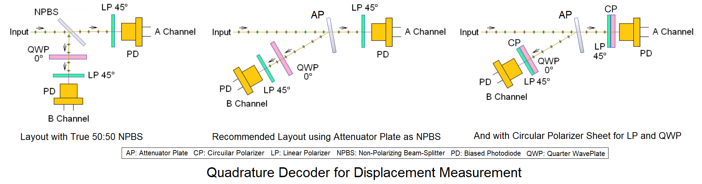
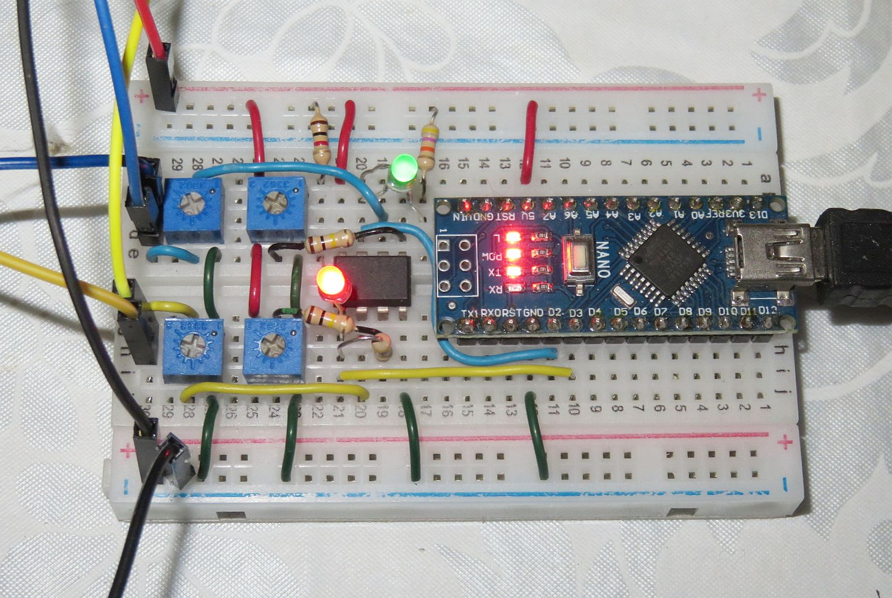
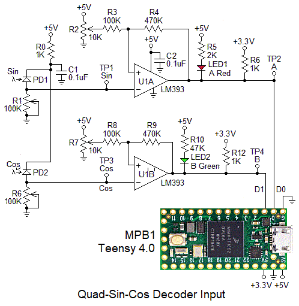
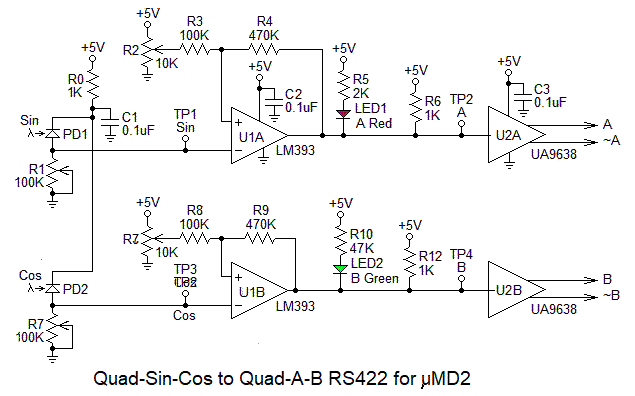
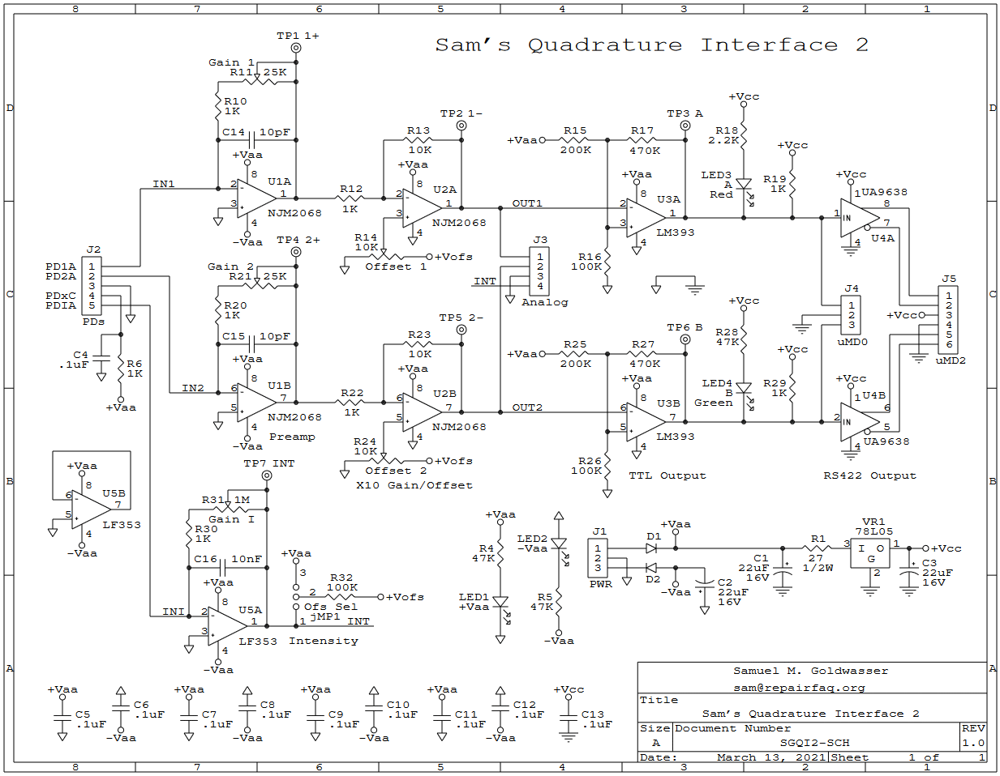

Rotary Encoder Digital Signals as a Function of Orientation
This shows a rotary optical encoder which uses a pair of LEDs and photodiodes physically offset by 90 degrees to generate Quad-Sin-Cos analog signals which are then thresholded to yield Quad-A-B digital signals. The specific type of sequence is called a "Gray" code (not based on color but attibutable to someone named Frank Gray) and has the property that any possible allowable change in value is a change in only a single bit. This eliminates the ambiguity with sensors using the normal binary order where two bits can change at not quite the same time.
(The annimated graphic seems to be all over the Web. If anyone knows who the original copyright holder is, I will acknowledge them.)
Many other types of encoders produce similar signals. They may use optical, mechanical, or magnetic sensing, among others.
An interferometer with angled paths for the two interfering beams produces fringes similar to the pattern of an optical encoder so a quad detector could be built with offset photodiodes and this has been done in some ring laser gyros as well as stabilized HeNe lasers. However, more commonly, the 90 degree phase shift is done optically using a single combined beam as shown below. The Quarter WavePlate introduces a 90 degree phase shift. If resulting Quad-Sin-Cos analog signals are thresholded and converted to digital form, the result would be a Quad-A-B format.

This shows variations on one of several common implementations for a Quad-Sin-Cos decoder that provides Sine and Cosine outputs for use in a displacement measuring system. This is among the simplest. In most instances, the photodiodes would be reverse biased to provide a linear response. Commercial systems will generally have a third "Intensity" channel to compensate for variations in detected power due to the laser aging, changes in alignment, and contamination over time. The Intensity channel can be implemented electronically or optically with a non-polarizing beam-splitter at the input and additional photodiode.
The purpose of the angled arrangement is to minimize the difference between the amplitudes of the two polarizations. Otherwise, with 45 degrees being close to the Brewster angle (around 57 degrees), one will be much larger than the other. Even so-called 50:50 beam-splitters may be subject to this, so using the angled arrangement for either one may be beneficial. There is an Attenuator Plate (AP) in these kit, which simplifies construction. Using the AP also permits the relative amplitudes of the Channel A and B signals to be mostly balanced without electronic adjustments.
The signal outputs from the biased photodiodes will be analog and close to sinusoidal. The relative phase shift betweem the A and B channels will be determined by the construction of the encoder or interferometer and the direction of motion. The graphic belows shows the specific case of a displacement measuring interferometer:

Typical Quad Decoder Signals as a Function of Time and Displacement Direction
(Scope Triggered on Rising Edge of Channel A Signal)
Some resourcefulness will be required to mount the parts in this kit to put together a Quad-Sin-Cos decoder. A variable attenuator plate is included that may be used as the NPBS. Pieces of CP will be satisfactory for both the combination of the LP+QWP (since that's exactly what the CP is), as well as the LP (flipped) since the output polarization doesn't affect PD behavior. See the information on polarization, below.
This would be a great excuse to finally make good use of that 3-D printer sitting idle. ;-) A simple frame could be designed to mount the AP via its spring and screw so its position, and thus reflection and transmission, would be adjustable in the beam. Slots and/or faces would be used to attach the pieces of CP and the PDs. Be creative! This is probably overkill though.
The photo shows the typical optical parts and photodiodes. The basic detector using a single photodiode like the DET110 can generate a signal corresponding to light and dark fringes, but cannot provide direction information, essential for using an interferometer in metrology applications. The Quad-Sin-Cos decoder provides a pair of outputs that are 90 degrees offset from each-other in position, similar to the outputs of a rotary or linear encoder:


Quadrature Detector using Variable Attenuator Plate and Circular Polarizer Sheets: Optical Layout, Parts, Built on Solderless Breadboard, Protoboard, and PCB
These photos show a diagram for the preferred implementation of the Quad decoder itself, the typical parts, and 3 perfectly workable construction options, the first of which uses a small solderless breadboard and doesn't require any soldering. For that one, the AP and pieces of CP sheet could be glued to wires that would be stuck in holes. Or U-shaped pieces of wire could simply be stuck in holes to keep the CPs and AP in place. ;-)
The ugly scope screen shots below shows behavior which is close to perfect:


Channel A and B Signals with Positive (Left) and Negative (Right) Displacement
Capturing a decent photo while twiddling the micrometer screw is quite challenging. ;-) But the conclusions are clear: This simple Quad decoder does its job well with a phase shift of close to ±90 degrees. If the Arm 2 mirror or retro-reflector were on an electronically controlled positioner like a loudspeaker voice coil or linear motor driven with a ramp, the waveforms would be textbook quality. ;-) With only a small stretch of the imagination, it can be seen that the screenshots agree with the expected behavior based on the diagrams, above. OK, perhaps not such a small stretch. ;-)
A prototype was constructed, appropriately enough, on a prototyping board :), and then the simple PCB was made so that mounting of the photodiodes and other electrical components would be simplified. There is nothing to really secure the AP/BS but that could be done with double-sided tape. Later the version using a small solderless breadboard was built and that version is the default for these kits since it does not require any soldering.
Constructing the Quad-Sin-Cos Detector
The mounting scheme doesn't need to be fancy or pretty but should hold the pieces securely while maintaining alignment. This can use bits of tape and Epoxy or other adhesive. The CPs (QWP/LP and LP) are expendible so feel free to chop them up if necessary to fit. :)
The photos above show various possibilities not involving a 3-D printer :), including a minimal custom PCB, but some soldering is required for that. The simplest approach is to use a small Solderless BreadBoard (SBB) which has a double sided sticky pad on the bottom which enables it to be attached to a standard optical post or other support.
Quadrature Decoder Constructed on Small Solderless Breadboard
- Set up the HeNe laser so that there is a linearly polarized beam.
Orient the polarization to be at 45 degrees or preferably, the
output of the interferometer as well.
- Mount the AP at an angle as close to normal to the incident beam
as is convenient to still be able to locate the Channel B CP and PD
in the reflected beam. The rational for this is to minimize the
effect of the angled plate on the polarization of the reflected and
transmitted beams. Why? If you're into fancy 3-D-printed mounts,
it can be arranged to use the screw/spring
combination to adjust it's position, and thus attenuation (or
transmission and reflection). But that certainly is not required and
the screw and spring can be relegated to your junk drawer. ;-)
- Mount one PD to intercept the transmitted beam. (This will be
designated Channel A or 1.)
Trim the leads if necessary so that in conjunction with adjusting the
height of the platform, the beam can be approximately centered
vertically in the AP.
- Adjust the position of the AP
so that the transmitted and reflected beam intensities are
approximately equal. This will be near or at the higher-density end
of the AP. If perfect balance is not possible, the remaining
adjustment will need to be done with the Gain trim-pots (substituting
for the fixed resistors, or later when the interface circuit is built).
- Install the second PD (Channel B)
to intercept the reflected beam. Note that
the AP glass is slightly tilted so it may be necessary to trim the PD's
leads or bend them over so its height will be correct.
- The PDs should be reverse biased with
5 to 15 VDC (+ to cathode, the right leg facing front).
A load resistor of approximately 100K ohms
should result in a decent signal amplitude for a ~1 mW laser. If too high
or too low using only the laser, no need to change until using the actual
interferometer output. 100K ohm trim-pots are included in the kits for
this purpose. The typical wiring for a two channel biased photodiode
is shown below.
R-Protect PD1 Yellow +-----/\/\----+-----|<|------<<----------------+-----------o Channel A | 1K ohms | | | | PD2 Blue | | +-----|<|------<<--------------------+-------o Channel B | | | | Facing Front of PDs / / | with Legs Down - R-Load1 \ \ R-Load2 | Anode: Left Pin 10K typical / / 10K typical | Cathode: Right Pin \ \ | | | Black | +---+-------o Ground | DC Power | | Red +| |- | +----------------------------<<--------||||----+ | | |<-- Solderless Breadboard -->|<-- Output / Power Wiring -->
(Should you care, the yellow and blue wire colors correspond to the channel 1 and 2 trace colors for the FNIRSI 1013D tablet scope used for testing.)
In the photo, above, one piece of CP sheet is stuck directly to the channel 1. PD. The other piece of CP sheet is simply propped in front of the channel 2 PD with the sticky side facing out. Long term, that side should be protected with some 5 Minute Epoxy or a microscope cover slip. The AP is just sitting on the SBB. Dabs of 5 Minute Epoxy, wire loops, or other means can be used to secure them more permanently. If using wire loops, take care not to short out anything that shouldn't be connected. ;)
The following must be done using the output of the interferometer that has been properly aligned so that interference can be seen on a white screen if a linear polarizer is placed in the output beam at 45 degrees.
Make sure you hands are clean or use a pair of latex surgical gloves when handling the pieces of CP.
- Cut a pair of 0.5x0.5cm or larger pieces of the CP sheet aligned with the
original edges.
- Carefully remove the protective film from both sides of the cut pieces.
One side is simply bare plastic; the other side has a sticky adhesive.
- The adhesive-side of the CP is the QWP with its optical axes at 0/90
degrees (aligned) with the edges; the other side is the LP with its
axis at +45 or -45 degrees. This can be confirmed by testing with a
linearly polarized laser or a random polarized laser with a
separate linear polarizer in front of it:
- When the CP's LP-side faces the laser, rotating it will result in
the transmitted intensity going very close to 0.
- With the CP-side facing the laser, there will be little or no change in intensity.
- When the CP's LP-side faces the laser, rotating it will result in
the transmitted intensity going very close to 0.
- Channel A: Attach the adhesive side of one of the pieces of CP
directly to the front of the Channel A PD making sure to keep it aligned
with the horizontal and vertical axes. This will result in its LP-side
facing the AP oriented so the polarization axis is at 45 degrees
(edges aligned with the X and Y axes). The result should be a
strong signal as the position of the remote reflector is changed
using a micrometer stage or whatever is convenient to change the
the Path Length Difference (PLD).
- Channel B: Attach the other piece of CP in the reflected beam
so that its QWP-side faces the AP and is oriented at 0/90 degrees (edges
also aligned with the X and Y axes). This is best done by using a drop
of 5 Minute Epoxy to stick it directly to the Channel B PD, but if large
enough, it can just be placed in front of the PD with a wire loop or
something similar to stabilize it. Just make sure that the wire loop
doesn't short out something important. ;)
The result should be a strong signal as the PLD is changed.
Once correct behavior is confirmed, coat the adhesive-side with a thin layer
of 5 Minute Epoxy to prevent it from attracting contamination like
dirt and dust, or stick it to a microscope cover slip. The original
protective film messes with the polarizatioin (it acts as a waveplate
of some sort) so it is not suitable.
- Fine tune interferometer alignment to maximize signal amplitude
and adjust the values of the PD load resistors so that the signal amplitudes
are between 3 and 5 V p-p.
- Observe the Channel A and B signals on the oscillscope. They should
be in quadrature (or very close). This means the phase shift between them
should flip from +90 to -90 degrees depending on the direction of motion
as in the diagram and photos, above.
Note: Even if the peak-peak amplitudes are made equal, it may not be possible to avoid an offset on one channel. In that case, the scope vertical position can be set to superimpose them on the screen, and later, the Threshold trim-pots can be set appropriately.
More on all this below in the section on displacement measurement.
Quad-Sin-Cos Decoder Parts List
Prt# Description ---------------------------------------------------------------------------- SBB1 Solderless breadboard with 170 tie points (17x2x5) PCB1 Quad Decoder PCB (optional with µMD0 PCB only) AP1 Variable attenuator plate used as adjustable NPBS CP1* Piece of Circular Polarizer (CP) sheet (axes ±45 degrees, cut to size) LP1* Piece of Linear Polarizer (LP) sheet (axes 0/90 deg, cut to size) CS1+ Microscope cover slips (round or square, 2 or 3, if included) R1 PD protect resistor C1 Bias bypass capacitor PD1 Photodiode for Sin/A channel PD2 Photodiode for Cos/B channel SKT1 Male-female 2 pin socket for PD1 SKT2 Male-female 2 pin socket for PD2 STB1 4 pole screw terminal block
* Only a CP sheet may be included. In that case, a piece of it will act as a QWP if the sticky side faces the PD; it will act as an LP otherwise.
+ The purpose of the microscope cover slips is to be able to attach the QWP (adhesive)-side of the CP to a clear window to prevent dust and fingerprints from building up on the adhesive, and the glass won't mess with the polarization. Being thin and fragile, avoiding them if at all possible is desirable. ;-) Where that side of the CP faces a PD, it can simply be stuck to it directly. ;-) Elsewhere, a thin layer of 5 Minute Epoxy can serve the same purpose.



Quad-Sin-Cos Interface to Atmega 328P Nano 3.0/µMD0 Schematic (Left), on Solderless Breadboard (Center), using Custom PCB (Right)
If using the Solderless BreadBoard (SBB), Parts placement is not at all critical but making it "nice" will help especially if problems are found. Standard Arduino-style male-male jumper wires can be used where necessary, but should be replaced eventually with suitable lengths of #22-#24 AWG solid wires. DO NOT force larger wires or stranded wires into the holes as the spring contacts may be damaged, leading to unreliable connections.
And for the uninitiated, there are two types of busses on the 400 tie point (and other larger) SBBs. A pair of busses all the way across the top and bottom are generally used for power and/or ground connections though there is no law about that. The remainder are 25 pairs of vertical busses with 5 tie points each.
If using the SG-uMD0 PCB, go to Assembly Instructions for the SG-µMD0 - RS422 and Analog Inputs.
Basic Quad AB Interface Parts List
Here is the very long detailed parts list for driving a TTL-compatible device like µMD0. :) The numbering refers to schematic above. This does not include the additional parts on the SG-µMD0 PCB for interfacing to RS422 or for interfacing to µMD2:
Prt# Description Comments ----------------------------------------------------------------------- U1 LM393P, 8 pin DIP Dual voltage comparator C2 0.1 µF capacitor Power supply bypass for U1 LED1 LED, red Thresholded Sin, A LED2 LED, HB green Thresholded Sin, B R0 Resistor, 1K Photodiode protection R1 Trim-pot, 100K-200K Sin (Channel A) load resistor* R2 Trim-pot, 10K Sin (Channel A) threshold R3 Resistor, 100K Sin (Channel A) trim-pot isolation R4 Resistor, 470K Sin (Channel A) hysteresis R5 Resistor, 2K-2.2K Red LED current limiting R6 Resistor, 1K Channel A pullup R7 Trim-pot, 100K-200K Cos (Channel B) load resistor* R8 Trim-pot, 10K Cos (Channel B) threshold R9 Resistor, 100K Cos (Channel B) trim-pot isolation R10 Resistor, 470K Cos (Channel B) hysteresis R11 Resistor, 36K-47K Green LED current limiting R12 Resistor, 1K Channel B pullup SBB1 Solderless breadboard with 400 tie points
R1 and R6 can serve as load resistors for the photodiodes (as shown) if bandwidth is not critical, or as the feedback resistors for proper trans-impedance amplifiers. R0 is simply to protect the PDs should they be installed backwards, and the power supply should a PD fail shorted.
Most of these parts are also included in the kit for µMD0, which includes a solderless breadboard as well. A similar circuit on a solderless breadboard is shown below.
This version doesn't have the two trim-pots R1 and R7. To make space for them, the other parts can be moved 4 holes to the right.
And here is a version to interface directly to the Teensy used in µMD2:

Note the 3.3 V source from the Teensy for the output pullups. This is critical to the health of the Teensy. Higher voltage (i.e., 5 V) may damage it.
And finally here is a version to generate RS422 for use with SG-µMD2 or other compatible device:

Additional parts for RS422 Output:
These would be needed to drive the RS422 inputs of µMD2 in the normal way. Alternatively, the components for the threshold can be installed on µMD2 so that the inputs can be single-ended. Information is in the Assembly Instructions for the SG-µMD2 Version 1.22 PCB. The only disadvantage of this approach is that to use µMD2 later with RS422 inputs may require removing the threshold connection to the input pin(s).
Prt# Description Comments ----------------------------------------------------------------------- U2 UA9638, 8 pin DIP Dual RS422 line driver C3 0.1 µF capacitor Power supply bypass for U2
The first is/was used by Teletrac for their single frequency laser-based systems.

In addition to the Sin and Cos channels, it also has an Int (intensity) channel which adjust the offset to accomodate varying signal levels.
The second is a circuit for which I am contemplating designing a PCB but it may not happen for awhile.

It's a combination of a dual trans-impedance pre-amp, gain stage, threshold to convert to Sin-A-B, and RS422 line drivers.
The third will be a simple PCB that accepts the two optical inputs and outputs RS422. So it should be a straightforward solution not requiring high speed op-amps. Its bandwidth is greater than 3 MHz with an optical power below 25 µW.